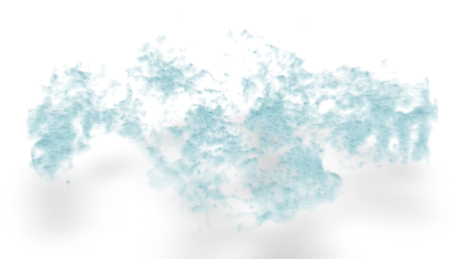
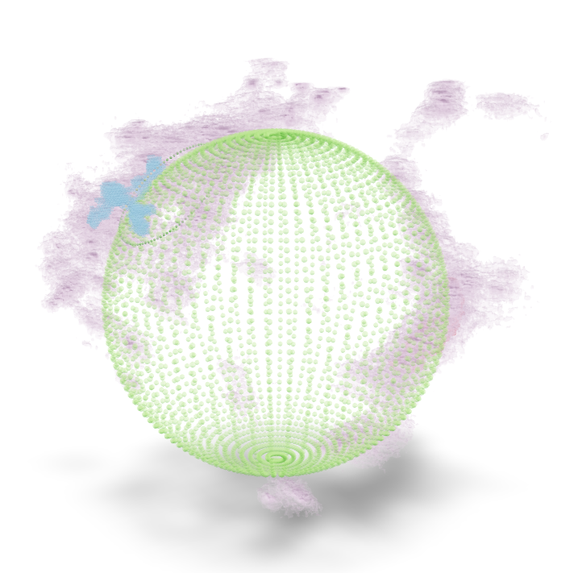

What is it?
glue-ar is a plugin for the glue visualization software which allows exporting views from glue's 3D viewers to augmented reality (AR)-compatible file formats.
Supported file formats
Currently glue-ar supports exporting to two industry-standard 3D file formats:

glue-ar supports both the JSON/ASCII (.gltf) and binary (.glb) forms of glTF. Additionally, it supports two compression methods for glTF:

glue-ar supports all three forms of USD files:
- ASCII-encoded (.usda)
- Binary-encoded (.usdc)
- Package file format (.usdz)
Installation
glue-ar is installable via pip:
pip install glue-ar
Installation requires Node.js to be installed on your system, as we currently use JavaScript packages for
performing Draco and Meshopt glTF compression. (Having Node installed is all that you need - the npm/JS
management relevant for the package is all handled by the package build process!).
Where can I use it?
glue-ar can be used with both major frontends for glue: the Qt desktop application, and the glue-jupyter viewers which can be used in Jupyter notebooks.
Qt desktop application
In Qt glue, the glue-ar export tool is exposed in the toolbar as sub-tools of the "save" meta-tool, and can be accessed from its dropdown menu.

Jupyter
The glue Jupyter viewers don't yet support subtools, so in these viewers the glue-ar export tool is exposed at the top level of the toolbar.

Supported viewers
glue-ar supports exporting from the following viewers:
- Volume and scatter viewers from the glue-vispy-viewers package (available in both Qt and Jupyter)
- Volume and scatter viewered powered by ipyvolume from the glue-jupyter package (Jupyter only)
model-viewer
If glTF is selected as the export file format, glue-ar will also export an HTML file in addition to the glTF. This HTML file provides a display of the exported figure using the model-viewer web component. This model-viewer page provides a THREE.js-powered glTF viewer that, on an AR-capable device (such as an Android or iOS phone) allows viewing the glTF file using the hardware's AR capability. This exported HTML has no additional dependencies and can be served using static file hosting.
Examples
Below are some examples of files generated using glue-ar:

An isosurface rendering of the same dustmap

A voxelized rendering of the Per-Tau Shell, using a voxelized method for dust clouds

Another rendering of the Per-Tau shell, using isosurfaces